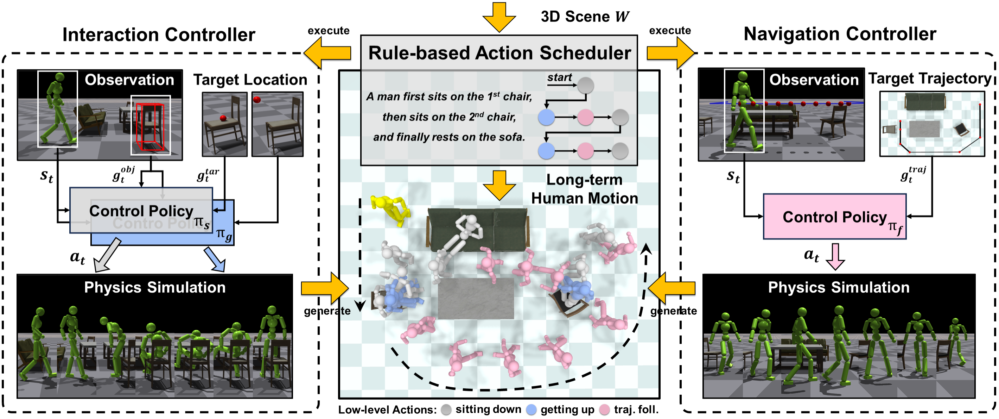
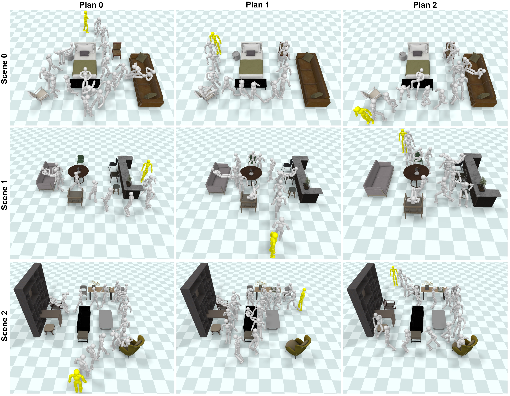

Introducing InterScene
Synthesizing Physically Plausible Human Motions in 3D Scenes
† Corresponding author
3DV 2024
International Conference on 3D Vision

Abstract
We present a physics-based character control framework for synthesizing human-scene interactions. Recent advances adopt physics simulation to mitigate artifacts produced by data-driven kinematic approaches. However, existing physics-based methods mainly focus on single-object environments, resulting in limited applicability in realistic 3D scenes with multi-objects.
To address such challenges, we propose a framework that enables physically simulated characters to perform long-term interaction tasks in diverse, cluttered, and unseen 3D scenes. The key idea is to decouple human-scene interactions into two fundamental processes, Interacting and Navigating, which motivates us to construct two reusable Controllers, namely InterCon and NavCon.
Specifically, InterCon uses two complementary policies to enable characters to enter or leave the interacting state with a particular object (e.g., sitting on a chair or getting up). To realize navigation in cluttered environments, we introduce NavCon, where a trajectory following policy enables characters to track pre-planned collision-free paths. Benefiting from the divide and conquer strategy, we can train all policies in simple environments and directly apply them in complex multi-object scenes through coordination from a rule-based scheduler.
Motivation
Existing physics-based scene interaction approaches cannot generalize to multi-object scenes due to the lack of two crucial abilities: (1) continuous interaction and (2) obstacle avoidance.
Pipeline
Given a multi-object 3D scene, our goal is to synthesize long-term motion sequences by controlling a physics-based character to perform a series of scene interaction tasks.
First, our system employs an interaction controller to provide two primary actions, i.e., sitting down and getting up. Second, we introduce a navigation controller to acquire another action, i.e., collision-free trajectory following. Finally, a rule-based action scheduler is exploited to obtain outputs by organizing reusable low-level actions according to user-designed instructions.

Generated Long-Term Motions in Diverse 3D Scenes

Scene 1
Scene 2
Scene 3
Extensibility
By training an additional interaction controller, a new skill of lying down can be seamlessly integrated into our system, which demonstrates the strong extensibility of our approach. Given two interaction controllers, our extended system enables the physics-based character to first lie on the sofa, then sits on the chair, and finally lie on the bed, exhibiting more diverse long-term interactions.

BibTeX
@inproceedings{pan2024synthesizing,
title={Synthesizing physically plausible human motions in 3d scenes},
author={Pan, Liang and Wang, Jingbo and Huang, Buzhen and Zhang, Junyu and Wang, Haofan and Tang, Xu and Wang, Yangang},
booktitle={2024 International Conference on 3D Vision (3DV)},
pages={1498--1507},
year={2024},
organization={IEEE}
}References
- Learning to Sit: Synthesizing Human-Chair Interactions via Hierarchical Control, AAAI 2021.
- InterPhys: Synthesizing Physical Character-Scene Interactions, SIGGRAPH 2023.
- AMP: Adversarial Motion Priors for Stylized Physics-Based Character Control, SIGGRAPH 2021.
- Trace and Pace: Controllable Pedestrian Animation via Guided Trajectory Diffusion, CVPR 2023.
We sincerely thank HuMoR for its awesome renderer.
Original website template based on NIFTY.